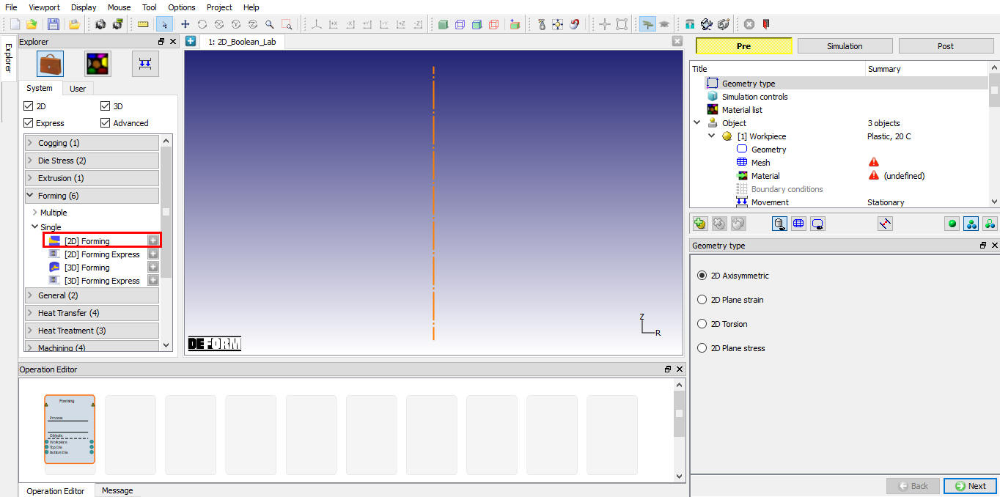
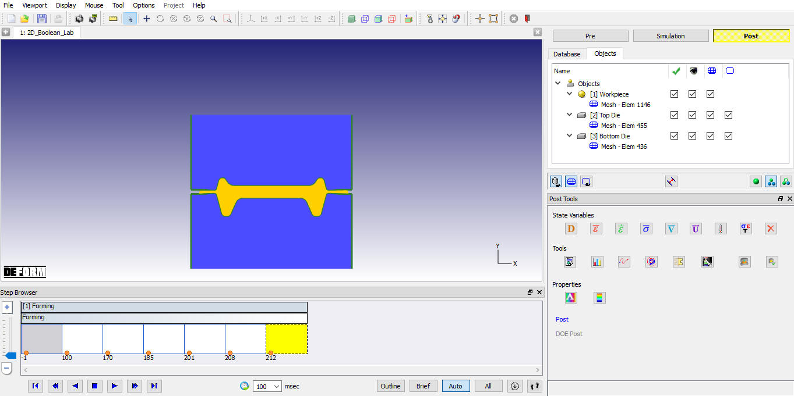
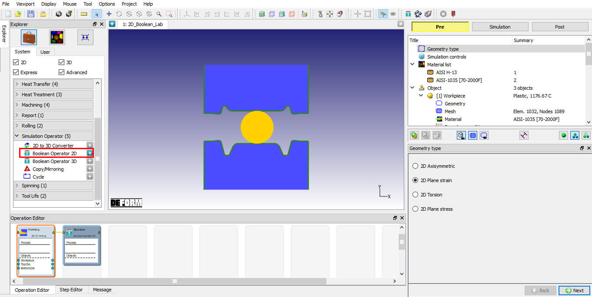
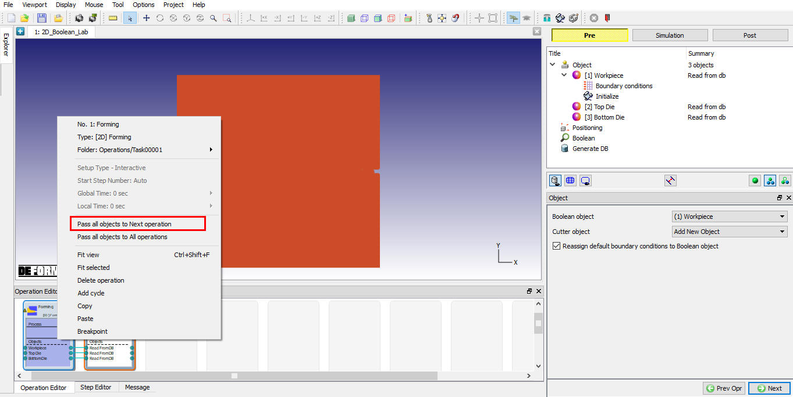
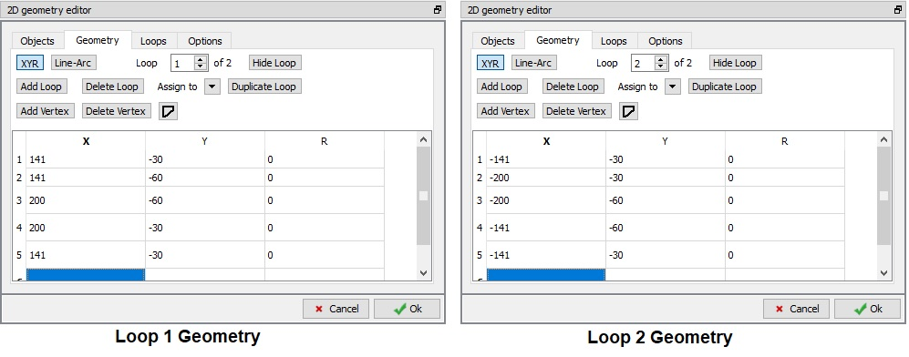
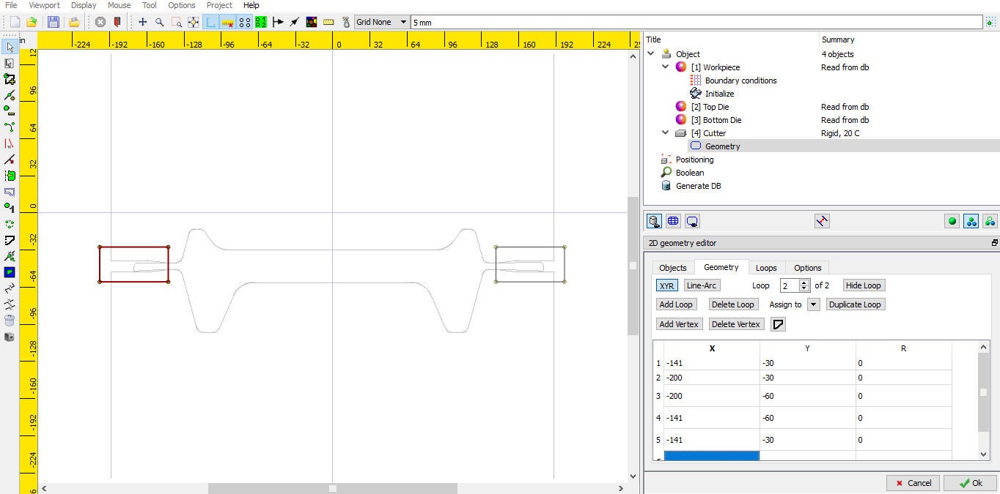
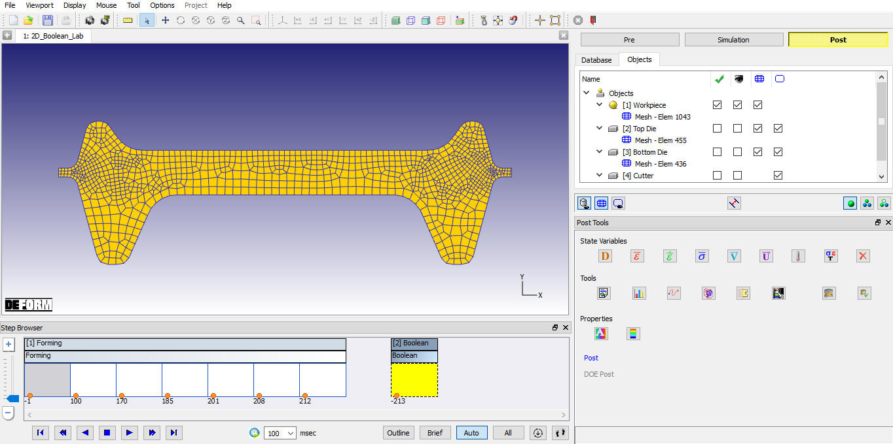
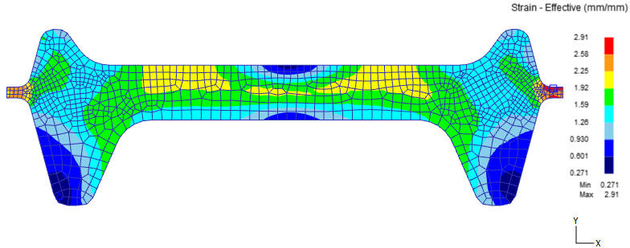
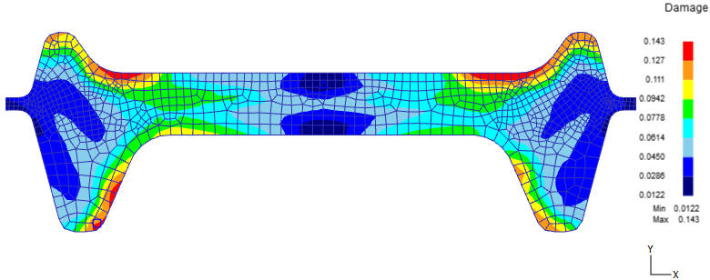

1.3. Adding 2D Forming operations
1.4. Importing Rib_web_SI.KEY file
1.6. Post-Processing the Results
In this lab we are demonstrating how to setup the Boolean operation using Rib Web example keyfile to remove the flash in MO Wizard.
On a Windows machine, go to the  button select DEFORM-v1x.xxx (.xxx indicates version number E.g. v14.0.2)
and select DEFORM GUI Main vxx.xx from the menu. The DEFORM GUI Main window will appear.
button select DEFORM-v1x.xxx (.xxx indicates version number E.g. v14.0.2)
and select DEFORM GUI Main vxx.xx from the menu. The DEFORM GUI Main window will appear.
Create a new problem either by selecting File  New Problem or by clicking the New Problem
New Problem or by clicking the New Problem  icon. The Problem Setup window will appear as shown in Fig. 2DBL1.1. Select "Integrated Manufacturing Process"
radio button and unit system as "SI" radio button in unit field. Define Problem Name as "2D_Boolean_Lab" and make sure the “Show option dialog” check box is turned on (if we do not turn on the
“Show option dialog” check box, then we will not get the New Project dialog in MO UI). Then click on
icon. The Problem Setup window will appear as shown in Fig. 2DBL1.1. Select "Integrated Manufacturing Process"
radio button and unit system as "SI" radio button in unit field. Define Problem Name as "2D_Boolean_Lab" and make sure the “Show option dialog” check box is turned on (if we do not turn on the
“Show option dialog” check box, then we will not get the New Project dialog in MO UI). Then click on  button to open a new Problem using the Deform
Integrated Manufacturing Process.
button to open a new Problem using the Deform
Integrated Manufacturing Process.
Problem Location selection window
Multiple Operation wizard will open with new project called 2D_Boolean_Lab to setup the problem. Add 2D Forming operation from Operations list in Explorer. Operation can be added by clicking on  button next to 2D Forming operation (see Fig. 2DBL1.2.) or user can also add the operation by dragging
and dropping the operation into Operation Editor region.
button next to 2D Forming operation (see Fig. 2DBL1.2.) or user can also add the operation by dragging
and dropping the operation into Operation Editor region.

Added 2D Forming operation into Operation Editor
Import Rib_web_SI.KEY file from DEFORM installation folder \2D\2D_Examples\SI\Forging Directory using  icon. Click on
icon. Click on  until DB generation page.
until DB generation page.
In Generate DB page. Click the  button to have the program check to see if anything was missed in the problem setup.
button to have the program check to see if anything was missed in the problem setup.
Click on  button to generate the database. When the program is done writing the database, switch to
button to generate the database. When the program is done writing the database, switch to  tab to run simulation.
tab to run simulation.
Once the database has been generated, switch to the Simulation mode by clicking on  button above the operation tree. Click on the
button above the operation tree. Click on the  action label to open the Run Options dialog. Use the default Continue Run option to select “Continue from the last step” (from step -1) option and then select the Simulation mode as Interactive and
click on
action label to open the Run Options dialog. Use the default Continue Run option to select “Continue from the last step” (from step -1) option and then select the Simulation mode as Interactive and
click on  button to run the simulation. As we click on
button to run the simulation. As we click on  button
simulation starts.
button
simulation starts.
When the simulation is finished without any issues, the following message will be added to the end of the Message file:"NORMAL STOP: Simulation is completed and stopped at the user specified time step".
After simulation has been completed, switch to  tab to view results, MO post processor will open. Play through the steps to see the workpiece shape (see Fig. 2DBL1.3.).
tab to view results, MO post processor will open. Play through the steps to see the workpiece shape (see Fig. 2DBL1.3.).

MO Postprocessor window
Click on  tab, MO Pre processor will open.
tab, MO Pre processor will open.
In this operation we will be define the region to be Boolean at the flash region.
Add Boolean operator 2D from Operations list in Explorer. Click on Boolean operator 2D in operation editor (see Fig. 2DBL1.4.).

Adding Boolean operator 2D
By default workpiece will be transferred to Boolean operation. We can transfer the Dies objects if required using Right mouse menu “Pass object to Next operation” option. (See Fig. 2DBL1.5.).

Passing object to Boolean operation
If user does not want the die to the Next operation no need to transfer the dies. Click on  until Cutter geometry page.
until Cutter geometry page.
Click on  and Create two loops geometry to delete the flash from the workpiece as shown in Fig. 2DBL1.6. and Fig. 2DBL1.7. Click on
and Create two loops geometry to delete the flash from the workpiece as shown in Fig. 2DBL1.6. and Fig. 2DBL1.7. Click on  to database
generation page.
to database
generation page.

Loops in Geometry

Defining Boolean geometry
Click on  button to generate the database. After generating Database switch to Post by clicking on
button to generate the database. After generating Database switch to Post by clicking on  button.
button.
Now go to Boolean operation step and observe the Workpiece. User can also verify the state variables interpolated onto the new mesh of the workpiece after boolean operation.

Workpiece after Boolean operation

Workpiece Strain distribution after Boolean operation

Workpiece Damage distribution after Boolean operation